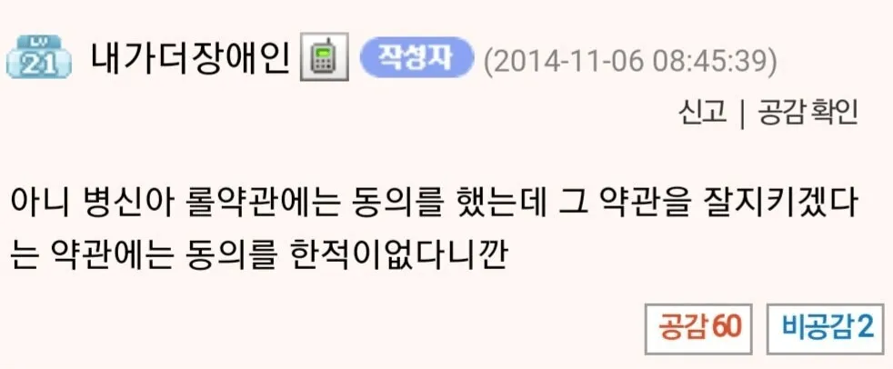

ㅋㅋㅋㅋ
닉값ㅋㅋㅋ
전설의
약동지동
저거 실제 사례 있지않았나? 어디서 본것같은데 ㅋㅋㅋ
논리학 쪽에서 패러독스로 본 것 같아ㅋㅋ
이게 또 틀린말은 아니라 할말이 없네
현실에서 신용이 걸린 계약서 작성하는 데에서 저러면 신용불량자 낙인 찍히는 거겠지
롤은 좀 욕할수 있게 약관좀 바꿔라
(약관을 잘 지킨다는 약관)을 지킨다는 약관에도 동의를 해야
웃긴건 약관때문에 예상치 못한 문제를 직면한게아니라 보편적인 도덕을 어겼다는거임
그리고 거기에 발작하는게 그 나라의 수준을 잘 보여줬다
현관을 열어놨다 도둑이 들었는데 도둑이 "아파트 규약에 남의 집에 들어가선 안 된단 조항이 없으니 난 무죄"라고 진지하게 주장하는 중